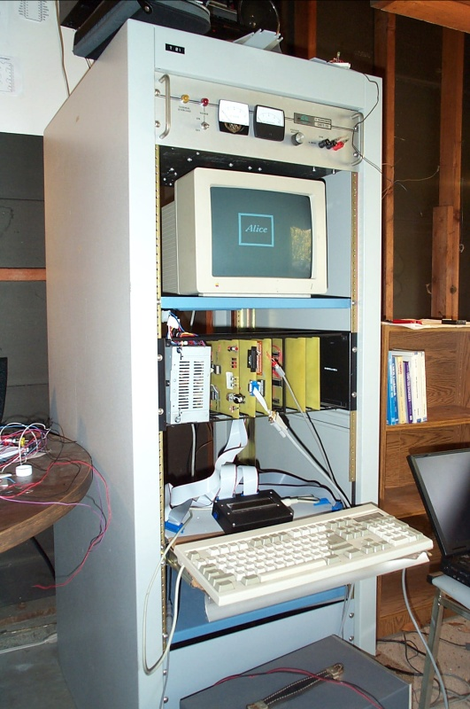

Video Board
We're both graphics nerds (or were), so we decided it wouldn't be a real computer without some kind of CRT display. So we built a video board that produced NTSC video output.


At first, we spent quite a bit of time researching the NTSC timing waveform. There appears to be a lot of variance in documented NTSC signal “standards”. On the one hand, that made us nervous that we wouldn't be able to generate a decent signal, but on the other, it probably meant that modern TVs can handle a huge range of input signals, so maybe we'd be protected by NTSC's ambiguity. As a test, we borrowed the “TV Typewriter” video circuit from Lancaster's CMOS Cookbook and built a ROM to drive it that we would clock at some high rate.

We built some source code to emit ROM images with whatever timing scheme we wanted on data pin 0 and a 1-bit black-and-white image on data pin 1, with a signal on pin 2 to reset the ROM address counters at the end of a frame. We scanned out at 60 frames per second, even though “real” NTSC alternates a frame of even lines and then a frame of odd lines to scan a complete image at 30 frames per second.
It turns out that, with a 64K ROM, at 60 Hz, you can run about 3.8 MHz and get 242 pixels on a video line before the ROM has to flip over. We probably ran our initial test at 2 MHz, although we didn't write down the speed. This worked extremely well, so we interfaced it to the Alice II.

Instead of driving the video signal from EPROM pin 1, we hooked it into a 128K RAM. We wasted most of the 128K on the video board just like main memory, but it's what we had and it was easy. It turned out very convenient that we had left a toggle on the memory board to mask out one 16K addressing region; it allowed us to map video memory into that region and allow direct CPU access. The bus in from the CPU and out to the video encoder were connected directly together, so when we accessed video from the CPU you would see snow on the screen. At first it seemed annoying, but later we found it very useful for indicating whether or not the CPU was correctly accessing the video board. Modern VGA boards use either dual-ported memory so that the CPU can access video memory at the same time as video scan-out, or they alternate DAC and bus accesses so that they don't interfere.
Because the RAM was scanned out continuously with the timing ROM, much of the video memory was outside the visible screen area. We ended up with roughly 200 pixels across by 170 pixels down. We wrote some code to read a PBM image (a simple format storing one pixel per bit), center it, and draw an outline around it, storing the result into a file we could download through the serial port to video memory. We had a lot of fun with that one. In a very real sense, we built an NTSC framebuffer and attached it to a PC.
